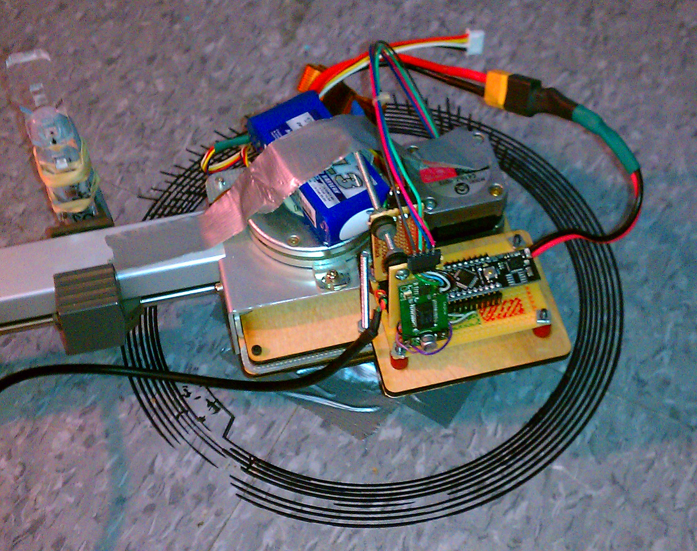
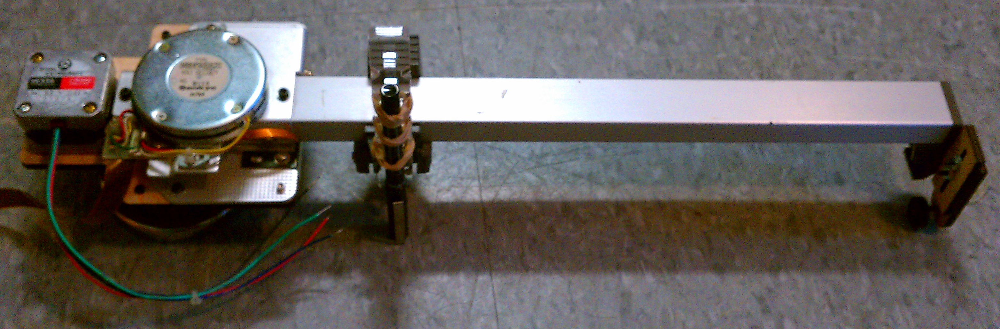
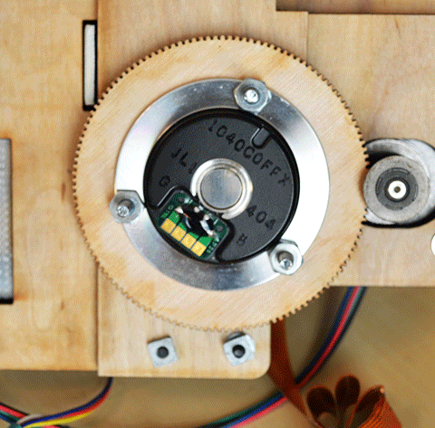
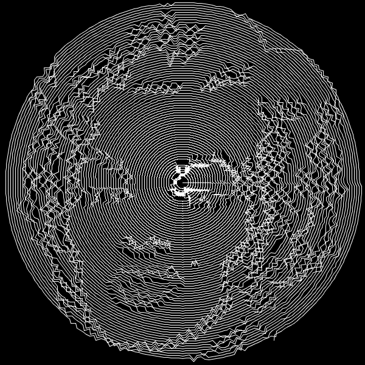
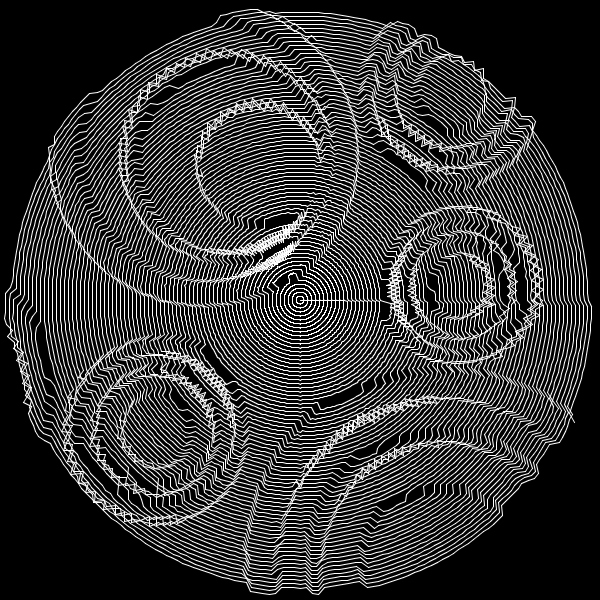

I thought it would be cool to have a robot that could be pulled out of a backpack and stuck to a flat surface magnetically and then print an image onto the surface.
I modified a plotter to build it.


To render images I wrote a small program in Processing which could sample a given image in a spiral or circular pattern. The resulting images turned out to be interesting artifacts in their own right.


Done in undergrad